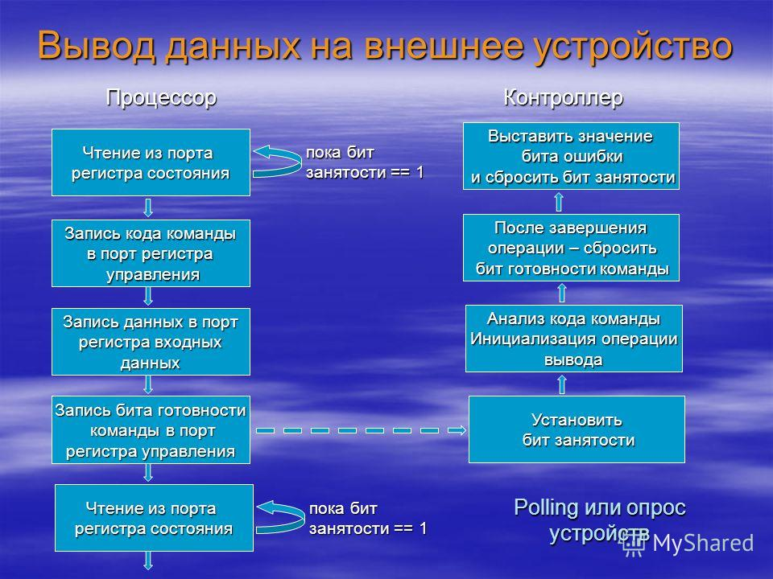
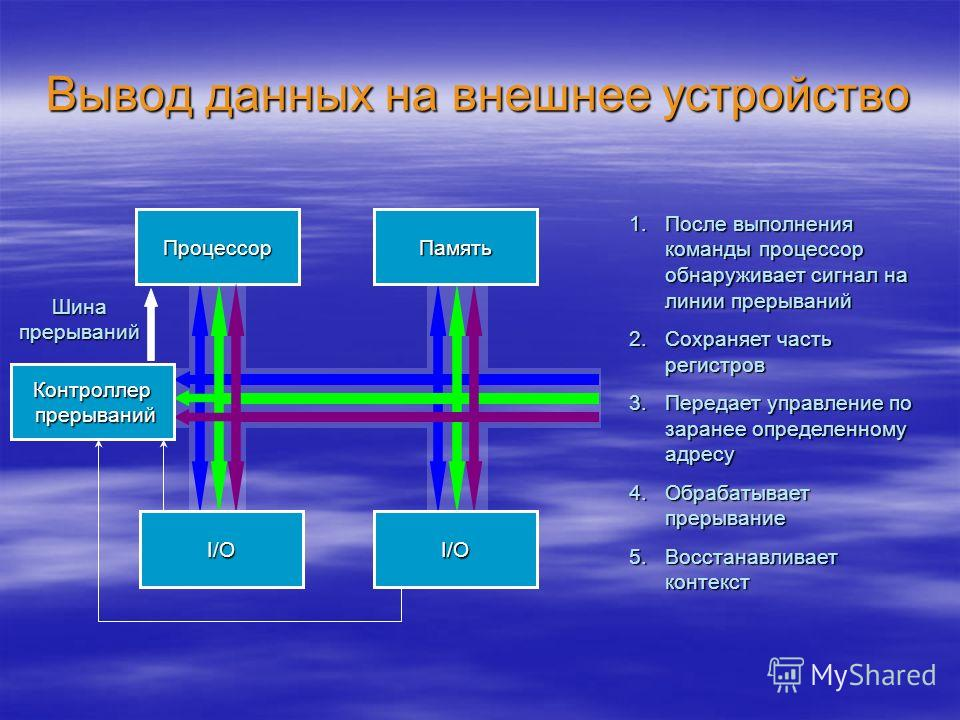
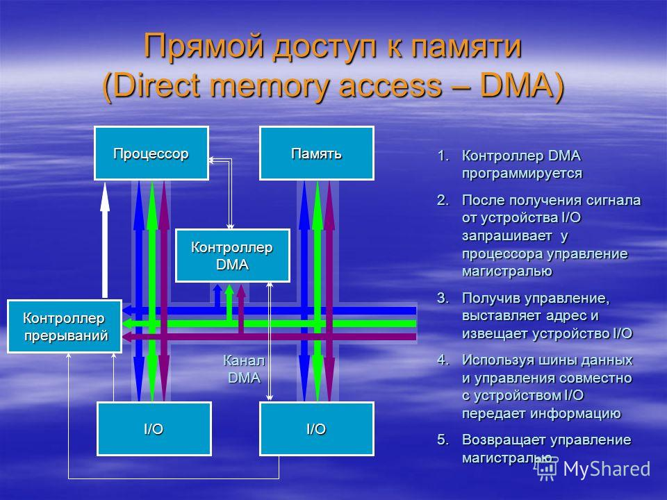

04.02.2015
Тема: Система управления ввода вывода
Общие сведения об архитектуре компьютера
магистрали - наборы линий, набор шин по которым передаются данные.
Каждая магистраль состоит их трех шин:
- Шина данных )- передаются сигналы ,которые соответствующей информации, которая должна быть записана в память.
- Шина управленияпо которой определяется, что нужно сделать с данными(процессор выставляет логический адрес устройства или памяти в которую
будет передаваться информация).Сообщем что с этими данными нужно сделать.
- Шина адресакоторая определяет куда эти данные необходимо вывести.
Передача идет последовательно. После всех действий на шине управления выставляются сигналы соответсвующие операций записи или чтения при работе
с устройствами ввода вывода.
Характеристика каждой шины , чем больше разрядность шины тем лучше.
8,16,32,64 ...
В начале для шины данных устанавливаем сигналы для памяти.
Устройства ввода вывода подлючаются к магистралям с помощью портов.
Есть адресное пространство ввода памяти и есть пространство портов.
Ячейки отображаются в адресном пространстве памяти. Порты ввода/вывода отображаются в пространство памяти.
Порты ввода/ввывода взаимно однозначно отображаются на линейное адресное пространство ввода/вывода.
Общие сведения об архитектуре компьютера:
Передача информации из процессора в порт, отображенный в адресное пространство ввода/вывода
- На адресной шине выставить сигналы для адреса порта.
- На шине данных выставить сигналы данных
- На шине управления выставить сигналы работы с устройствампи ввода/вывода и операций записи
- Могут существовать два адресных простанства - пространство адреса и пространство ввода- вывода
- Пространство обысчно отображается в адресное пространство ввода-вывода иногда в адресное пространство.
- Какое адресное пространство использовать определяется типом команды или типом операндов.
- Управление устройство ввода-вывода, приемом и передачи данных через порты
и выставлением сигналов на магистрали занимаются контроллеры.
Каждый контроллер состоит как минимум из четерех регистров
- Регистр состояния
- Регистр управления
- Регистр выходных данных
- Регистр входных данных
Регистр состояния содержит биты значения которых определяется состоянием устройства и которые доступны только для чтения в вычислительной системы.
Т.е. регистр состояние read only . в регистре состояния есть, как правило, есть: бит занятости , бит готовности и бит ошибки.
Регистр управления получает данные, которые записываются для инициализации устройства ввода-вывода или выполнения очередной команды.
Регистр состояния (read only):
- без занятости
- без готовности данных
- без ошибки
Регистр управления (write only)
- биты кода команды
- биты режима работы
- бит готовности команды
Регистр выходных данных(read only)
- для записи из него всех данных
Регистр входных данных(write only)
- само устройство передает в него результат

Вывод данных на внешнее устройство:

Прямой доступ к памяти

Организация ввода
p
Буфер -
Кеш хранит копию данных, а буфер - это область памяти, которая хранит информацию в единственном экземпляре.
Устройства могут быть разделяемыми и неразделяемыми.
Spooling и захват устройств.
Способы использования неразделяемых устройств:
- монопольный захват устройства
- spooling
Spool - буфер, содержащий входные данные
Устройства ввода-вывода делятся на три группы:
- Устройства работающие с пользователем (клавиатура, мышь).
- Устройство работающие с компьютером (контроллеры, преобразователи,датчики,дисковые накопители,Н.:датчик температуры).
- Коммуникации(модемы, сетевые адаптеры).
В рамках каждой группы устройства отличаются
Характеристика различий по которым различают устройства:
- Скорость передачи данных
- Приминение
- Сложность управления. Чем сложнее управление тем сложнение организация контроллеров
- Еденица передачи байтов. Данные могут передаваться байтами или символами
- Представление данных. Разные данные могут иметь разную кодировку. Например поддерживать контроль четности или наоборот.
- Характеристика услоывия ошибки(причина ошибки или природа ошибки укаждого устройства своя).
Обычно контроллер имеет несколько регистром и имеет свой буфер.
Тема 2. Функции подсистемы ввода-вывода:
- Организация паралельной работы устройств ввода/вывода и процессора.
- Согласования скоростей обмена и кэширования данных.
- Разделения устройств между процессами.
- Обеспечения удобного логического интерфейса между устройствами и системой.
- Поддержка широко спектра драйверов.
- Динамическая загрузка и выгрузка драйверов без дополнительных действий с ОС.
- Поддержка нескольких файловых систем.
- Поддержка ассинхронных и синхронных операций ввода/вывода.
Динамическая загрузка и выгрузка драйверов без дополнительных действий
с операционной системой. поддержка нескольких различных файловых систем.
Файловая система
- это способ организации, структурирования данных на этом устройстве.
!!!!Завтра д.з.
!!!!Семенар на тему файловых систем . поддержка нескольких файловых
Операция ввода вывода может выполнять тремя способами:
- C помощью программируемого ввода-вывода, когда процессор встречает команду на ввод-вывод он посылает сигналы на контроллер
- С помощью запросов и прерываний
- С помощью прямого доступа к памяти(DMA - direct memory access) - в обход процессору.
Процессор посылает запрос на передачу блока данных модулю прямого доступа к памяти.
А прерывание происходит только после передачи всего блока данных.
Обычно DMA модуль использует шину лишь в том случае, если в ней не нуждается процессор.
Когда процессору нужну записать или считать блок данных он
выполняет запрос к модулю DMA и передает ему следующую информацию:
- Тип операции(чтение и запись)
- Адрес используемого устройства. как только мы подключам устройство система ему назнаечает адрес.
- Начальный адрес считываемого или записываемой области памяти, т.е. куда записать или откуда считать данные.
- Какое количество слов нужно прочитать или записать.
Вывод:Процесс участвует в операции только в начале или в конце. в самом обмене
с устройством вводы -вывода не участвует.
Конфигурация прямого доступа к памяти:
- Одиночная шина или обособленная DMA. Один канал по которому все устойства общаются.(см. рис 4 в тетраде)
- Одиночная шина , интегрированные DMA
- Обособленная шина ввода- вывода
Что такое spooling - имитация работы устройства в режиме непосредственного подключения к нему.